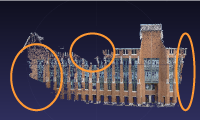

Flags are colored by team. Click on a flag to submit a photo.
Each flag has an image showing the location of the flag in orange.
Take photos that overlap the orange region.
Flags are either uncaptured (white), disputed (pale), or captured (boldly colored).
You can get new white flags to appear by expanding the models!
Filling in holes and taking photos at the edges of models will give you the most points!
